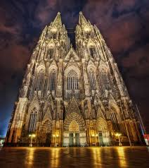
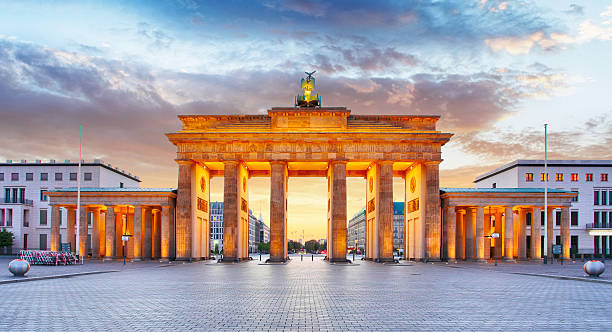
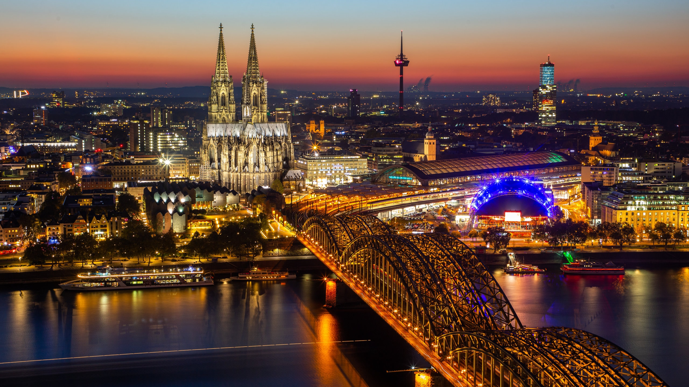

A DONDE ME GUSTARIA IR?
me gustaria viajar a Alemania a visitar la cologne cathedral por lo que he visto esta catedral es muy grande y impresionante es muy bonita por lo cual lo quedria visitar
La Catedral de Colonia (Kölner Dom) es una de las estructuras góticas más impresionantes de Europa y un símbolo icónico de Alemania. Su construcción comenzó en 1248, pero debido a interrupciones, no se completó hasta 1880. Con sus torres gemelas de 157 metros, fue el edificio más alto del mundo hasta 1884.
Este monumento alberga el relicario de los Tres Reyes Magos, lo que lo convierte en un importante destino de peregrinación. Además, fue declarado Patrimonio de la Humanidad por la UNESCO en 1996 debido a su valor arquitectónico y cultural.
A lo largo de los siglos, la catedral ha resistido guerras y daños, pero sigue siendo un testimonio de la persistencia del arte y la fe en Europa.

QUE LUGARES DE AHI TE GUSTARIA CONOCER?
iria por 2 lugares que son :
1:La Puerta de Brandeburgo (Brandenburger Tor) es uno de los monumentos más icónicos de Berlín y de toda Alemania. Construida entre 1788 y 1791, esta impresionante estructura neoclásica fue diseñada por Carl Gotthard Langhans por orden del rey Federico Guillermo II de Prusia.
Originalmente, la puerta marcaba la entrada a la ciudad y simbolizaba la paz. Sin embargo, con el paso del tiempo, se convirtió en un testigo de momentos clave de la historia alemana. Durante la Segunda Guerra Mundial, sufrió daños significativos, y en la época de la Guerra Fría, quedó atrapada en la zona de separación entre Berlín Oriental y Occidental, justo junto al Muro de Berlín.
Tras la caída del muro en 1989, la Puerta de Brandeburgo se transformó en un símbolo de unidad y libertad, representando la reunificación de Alemania. Hoy en día, es un punto de referencia turístico y un lugar donde se celebran eventos importantes, como el Año Nuevo y manifestaciones culturales

2:La Catedral de Colonia es una obra maestra del estilo gótico y uno de los monumentos más emblemáticos de Alemania. Su construcción comenzó en 1248, con el propósito de albergar el relicario de los Tres Reyes Magos, lo que la convirtió en un importante destino de peregrinación.
A lo largo de los siglos, la edificación enfrentó múltiples interrupciones, quedando inconclusa por casi 300 años. No fue hasta el siglo XIX, impulsada por el fervor nacionalista alemán, que se retomaron los trabajos y finalmente se completó en 1880, siguiendo los planos originales medievales.
Con sus torres de 157 metros, la catedral fue el edificio más alto del mundo hasta 1884 y sigue siendo la iglesia de dos torres más alta del planeta. Su imponente fachada y sus vitrales detallados la convierten en una joya arquitectónica, reconocida como Patrimonio de la Humanidad por la UNESCO en 1996.
Hoy en día, la Catedral de Colonia es visitada por millones de personas cada año, no solo por su valor religioso, sino también por su impresionante belleza y su papel en la historia europea
